Aprender, en la app
Para entender lo que ves.
En Aprender hay biomas, para entender por qué en cada paisaje vive lo que vive; páginas de familias y grupos, para ver qué tienen en común los parientes y cómo reconocerlos; y ensayos, para las ideas que no caben en una ficha.
Cifras del 13 de octubre de 2026.
Biomas · 25
Del páramo al manglar.
-
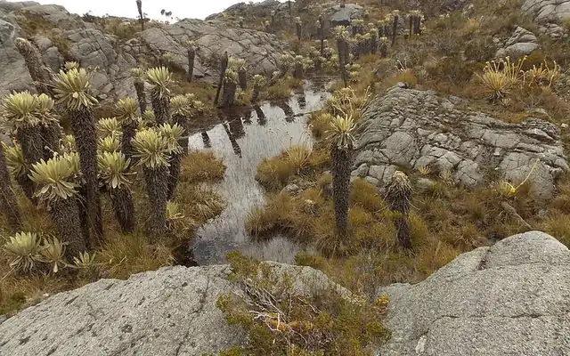
Páramo
Foto: VeRdUgO PY · CC BY-SA 4.0 -
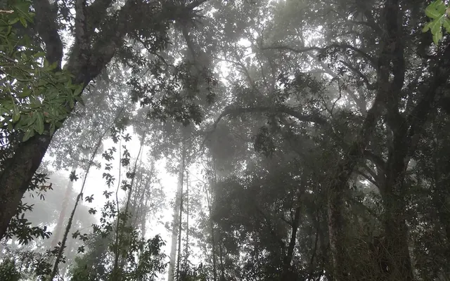
Bosque de Niebla
Foto: Petruss · CC BY-SA 3.0 -
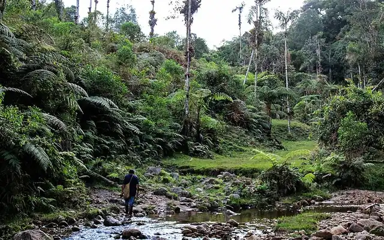
Bosque Andino
Foto: Juanpablo.madrid-malo · CC BY-SA 4.0 -
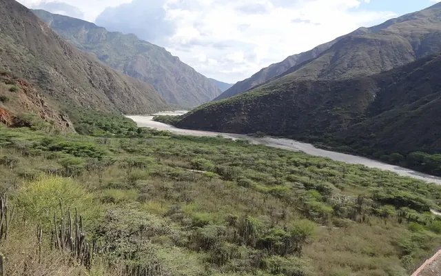
Bosque Seco Tropical
Foto: Petruss · CC BY-SA 3.0 -
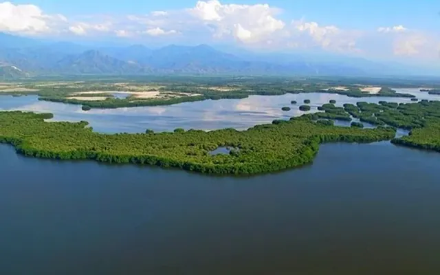
Humedal
Foto: Turntciaga · CC BY-SA 4.0 -
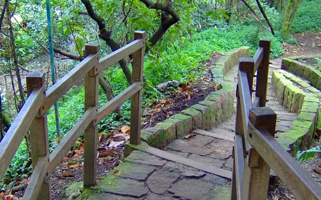
Espacio Verde Urbano
Foto: CARITO PABÓN · CC BY-SA 2.0 -
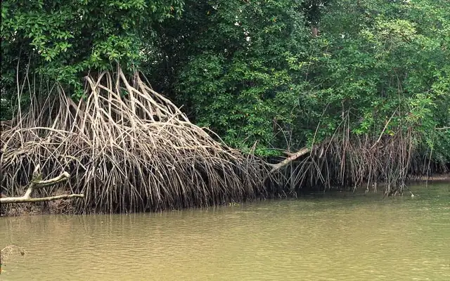
Manglar
Foto: Diego Tirira · CC BY-SA 2.0 -
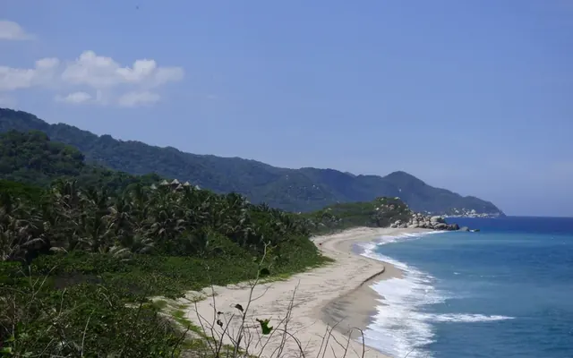
Playa Costera
Foto: Alejandro Bayer Tamayo · CC BY-SA 2.0


.jpg){kind=link}
.jpg){kind=link}
Y 17 más
- Arrecife de Coral
- Bosque Húmedo Amazónico
- Bosque Húmedo del Caribe
- Bosque Húmedo del Pacífico
- Bosque Inundado (Várzea)
- Bosque Ripario
- Bosque Subandino
- Costa Rocosa
- Lago y Río de Agua Dulce
- Matorral Seco
- Mosaico Agrícola
- Océano Abierto
- Pantano de Palmas
- Sabana (Llanos)
- Sabana Tropical
- Selva Tropical
- Subpáramo
Fotos de Wikimedia Commons, recortadas.
Familias y grupos · 65
Quién es pariente de quién.
Flora 12
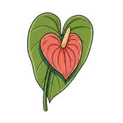
Aráceas- Bromelias
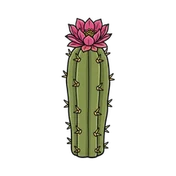
Cactus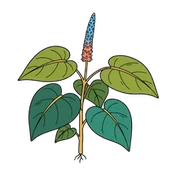
Cordoncillos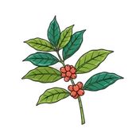
Familia del café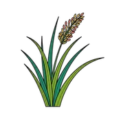
Gramíneas- Heliconias
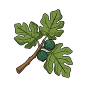
Higuerones y caucho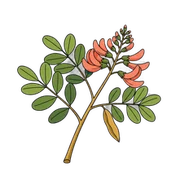
Leguminosas- Orquídeas
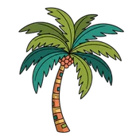
Palmas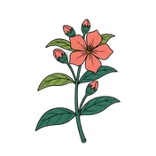
Sietecueros y nigüitos
Fauna 47
Aves
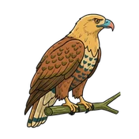
Águilas, gavilanes y milanos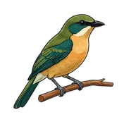
Atrapamoscas tiranos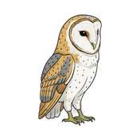
Búhos y lechuzas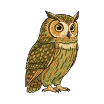
Búhos, buhitos y currucutús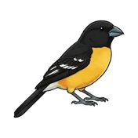
Cardenales y picogruesos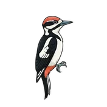
Carpinteros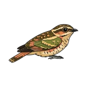
Chotacabras y añaperos- Colibríes
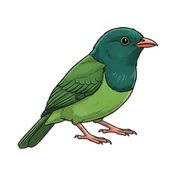
Cotingas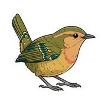
Cucaracheros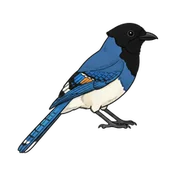
Cuervos y carriquíes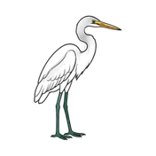
Garzas y garcetas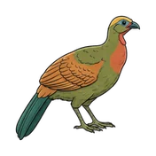
Guacharacas, pavas y paujiles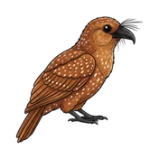
Guácharo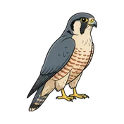
Halcones y caracaras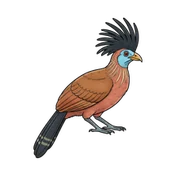
Hoatzin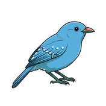
Hormigueros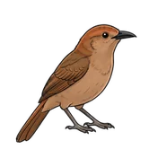
Horneros y trepatroncos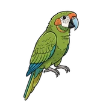
Loros y guacamayas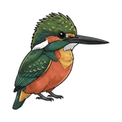
Martines pescadores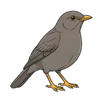
Mirlas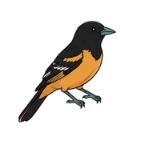
Oropéndolas, turpiales y mirlos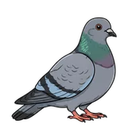
Palomas y tórtolas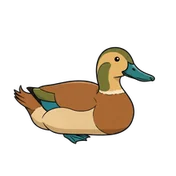
Patos y gansos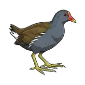
Polluelas, rascones y fochas- Tángaras
- Tororois
- Trogones y quetzales
- Tucanes
- Vencejos
Invertebrados
- Abejas
- Arañas saltarinas
- Arañas tejedoras orbiculares
- Escorpiones bútidos
- Libélulas
- Mariposas y polillas
- Tarántulas
Reptiles y anfibios
- Ranas de lluvia
- Ranas y sapos
- Serpientes
Mamíferos
- Felinos
- Monos araña, lanudos y aulladores
- Murciélagos
Peces
- Anguilas eléctricas y peces cuchillo
- Cuchas y corronchos
- Mojarras y tucunarés
- Sardinas y caracinos
Hongos 6
- Boletos
- Hongos con sombrero
- Hongos de repisa
- Líquenes
- Políporos
- Rúsulas y lactarios
Ilustraciones: Tawari.
Ensayos · 17
Para leer con calma.
Conservación · 8 min
El oso de anteojos: un gigante casi vegetariano entre las nubes andinas
Conservación · 7 min
Endémica, nativa, introducida: una tarjeta de vocabulario
Conservación · 8 min
Pensar en corredores: por qué las reservas aisladas no alcanzan
Conservación · 7 min
Por qué se extinguen las especies
Conservación · 6 min
Qué mide realmente la Lista Roja
Conservación · 7 min
Qué protege realmente un área protegida
Identificación · 6 min
Identificación de aves 101: cómo ver lo que estás mirando
Identificación · 9 min
Identificación de hongos 101: por qué una huella de esporas es más confiable que cualquier fotografía
Identificación · 9 min
Identificación de reptiles y anfibios 101: forma, sustrato y sonido
Identificación · 6 min
La bandada mixta de la mañana: por qué quince especies de aves llegan de repente juntas
Conceptos · 7 min
Cómo reciben su nombre las especies
Conceptos · 7 min
Hongos, setas y la red biológica del bosque: un vocabulario que sí puedes usar
Conceptos · 7 min
Qué significa realmente «endémico»
Regiones · 7 min
Café y bosque: el único cultivo al que le encanta la sombra
Regiones · 7 min
Cómo funcionan las estaciones en los trópicos: por qué Colombia no tiene invierno, pero sí mucho clima
Cultura · 6 min
Cilantro y coriandro: una planta, dos cocinas, una polémica de jabón
Taxonomía · 8 min
Por qué Colombia no tiene simios
Lista de espera
Todo esto viene en la app.
Te escribimos una sola vez, cuando tu invitación a la beta esté lista.